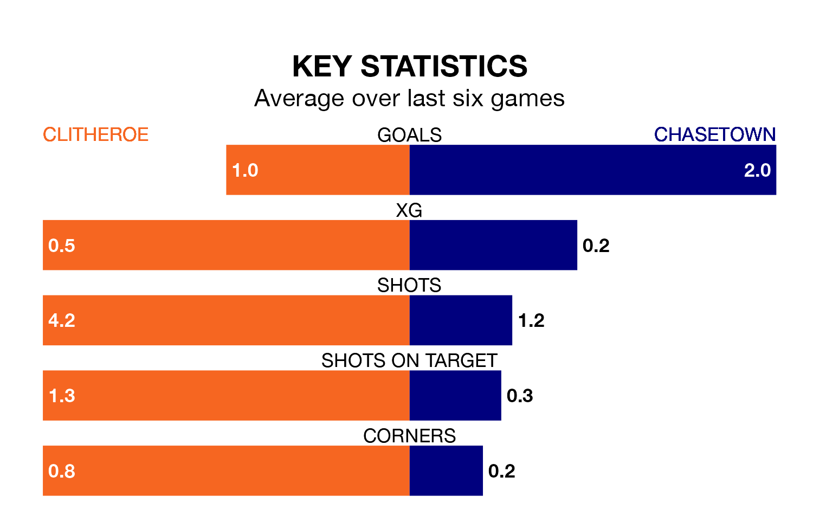

Clitheroe host Chasetown on Saturday at Shawbridge in the Northern Premier League Division One West.
In their last league match, on February 10, Clitheroe lost to Runcorn Linnets 5-1 away.
Chasetown also lost, 2-1 away at Mossley on Tuesday.
With 41 goals in 25 games so far this season, Clitheroe are scoring more than average in the league with 1.6 goals per game. And they are conceding at an average rate, letting in 35 goals at a rate of 1.4 per game.
Chasetown, meanwhile, are average scorers, with 1.4 goals per game. They have conceded 1.3 goals per game.
The visitors are sixth in the table after 27 games, of which they have won 11 and drawn six, earning 39 points.
The home side are four places behind Chasetown in 10th, with 10 wins and seven draws putting them on 37 points.
Clitheroe are in mixed form in the Northern Premier League Division One West, with two wins and three draws from their last six games.
With three wins and three losses over that period, Chasetown's form is similar – they have both taken nine points from 18.
Updated: 13:04 (UTC), 16/02/24